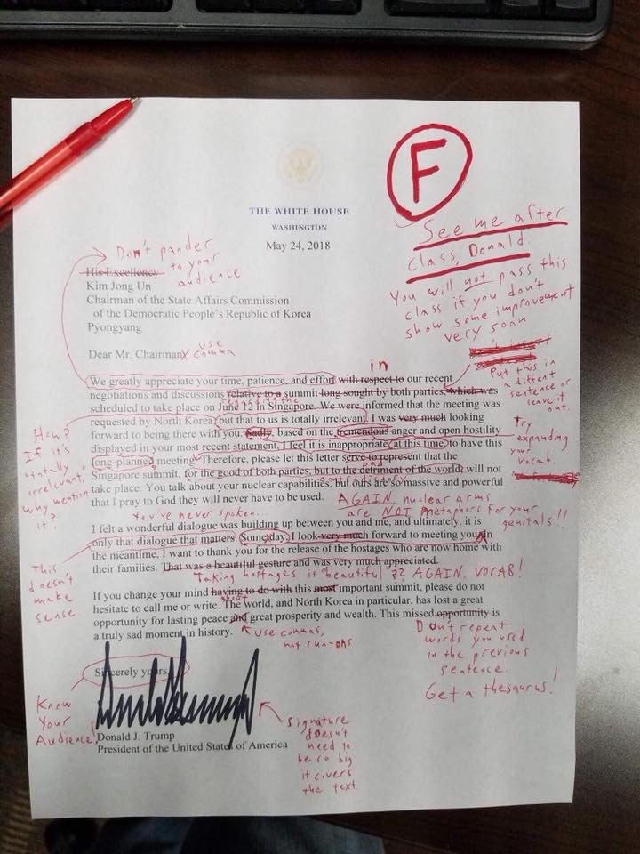
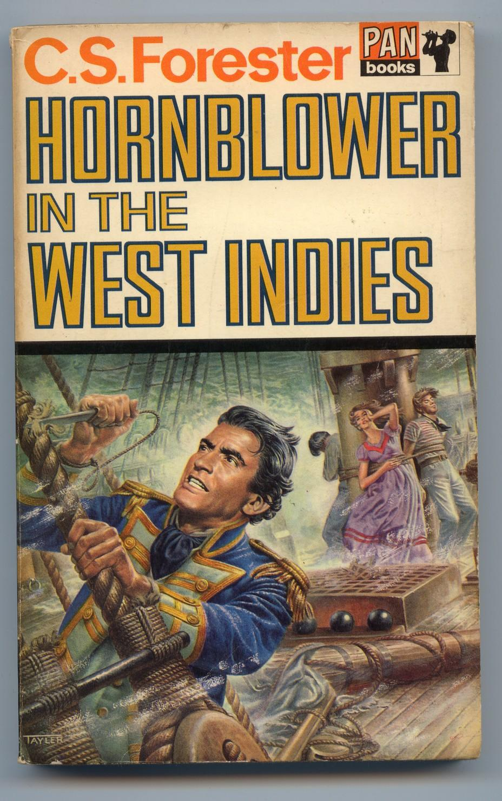
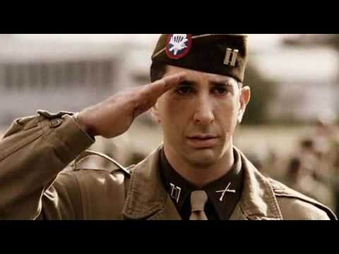

트럼프의 편지에서 His Excellency의 의미는 ?
게시: 2018-05-28T06:30:00+09:00
최근 며칠동안 트럼프 트황상께서 한국 뿐만 아니라 한장의 편지로 전세계를 발칵 뒤집어놓았지요. 이 편지 첫머리는 아래와 같이 시작합니다.
His Excellency
Kim Jong Un
Chairman of the State Affairs Commission
of the Democratic People’s Republic of Korea
Pyongyang
Dear Mr. Chairman
We greatly appreciate your time, patience, and effort with respect to our recent negotiations and discussions relative to a summit long sought by both parties, which was scheduled to take place on June 12 in Singapore. (이하 생략)
솔직히 저는 그래도 'Sad !' 따위의 단어만 늘어놓던 트황상께서 모처럼 격식 있는 긴 문장을 쓴 것을 보고 제법 외교 문서답다라고 생각했습니다. 특히 저 맨 앞에 나온 His Excellency 부분에서 꽤 깊은 인상을 받았어요. 저렇게 '너'나 '당신' 등으로 부르지 않고 3인칭으로 부르는 것은 우리로 따지면 '각하'라고 부르는 것으로 관직이나 작위가 있는 상대방을 예우하는 것이거든요. 다만 편지 앞머리에서 수신인 직함을 쓸 때 저렇게 'His Excellency'를 쓰는 예가 있던가 하는 의아함은 들었습니다.

(이 따위 문장을 외교 문서라고 전세계에 발표를 해서 미국 개망신을 시켜 ? 라는 미국 국어 선생님의 분노의 빨간펜)
그런데 알고 보면 이 편지는 문법도 이상하고 어휘나 내용도 부적절한 것이라고 합니다. 미국 중학생 영작문 시간에 이런 편지를 내면 위 사진과 같이 지적질만 잔뜩 당하고 F학점을 받을 내용이라는 것이지요. 위 사진 뿐만 아니라, 페이스북에 돌아다니는 내용을 보니 워싱턴포스트 기사의 댓글란에 베스트 댓글이라며 아래와 같은 반응이 있더군요.
“이제 미국은 대통령이 중학교 1학년 국어 시간 숙제로도 낙제점인 글을 외교문서랍시고 쓰고 있는데도 거기에 대해 아무도 말을 안 하게 되는 지경에 이른 것인가요 ? 내용이 온통 중학교 1학년 짜리의 성숙하지 못한 수동적-공격적 감정으로 범벅인 서한을 ? 그 점은 다들 그냥 무시하고 지나칠 거에요 ?”
"Have we really reached the point that nobody's going to say anything about the President of the United States penning a diplomatic letter containing prose that would be unacceptable in a 7th grade English class? A letter that has all the passive-aggressive emotional maturity of... well, again, a kid in the 7th grade? We're just going to ignore that?"
(passive-aggressive는 공공연한 적개심은 없지만 매우 비우호적인 태도를 가리키는 말입니다 : 역주)
물론 이건 트럼프 비웃기를 즐기는 지식인들이 좀 깐깐하게 본 내용이라서 그럴 겁니다. 가령 제가 조금 어색하다고 느꼈던 His Excellency는, 적어도 위 사진에 빨간펜 지적질을 한 영어 선생님에 따르면 수신인을 적을 때는 적지 않는 것이 맞다고 되어 있지요. 하지만 실제로 유럽 국왕 등에게 편지를 보낼 때는 수신인 부분에 His Majesty The King이라고 써야 하는 것이 맞습니다. 그 빨간펜 선생님이 김정일에게는 안 쓰는 것이 맞다고 지적질 하신 것은 어떤 이유에서인지 잘 모르겠군요. 아마 현대적인 외교 문서에서는 His Excellency와 같은 과다한 예우는 빼는 것이 맞기 때문이 아닐까 합니다. 가령 미국 대통령에게 편지를 쓸 때는 겉봉에 그냥 Donald Trump, President of the United States of America라고 쓰는 것이 맞답니다. 원래 조지 워싱턴 시대에는 대통령이라는 것이 꽤 새로운 관직이다보니 His Excellency라는 유럽 귀족스러운 칭호를 쓰긴 했고, 링컨 시절까지만 해도 유럽 각국과 서신을 주고 받을 때 그런 경칭을 쓰곤 했지만, 그 이후로는 점차 그냥 소박하게 Mr. President라고 부르는 것이 굳어졌다고 합니다.
저런 경칭을 영어로는 honorific이라고 하는데, 아무에게나 대충 아무 경칭을 쓰면 안되고 직위에 맞게 나름대로 알맞는 단어가 다 정해져 있습니다. 가령 김정은에게 붙여준 His Excellency는 대통령이나 총리, 대사 등에게 쓸 수 있는 경칭이고 교황청 같은 경우 주교(bishop) 또는 대주교(archbishop)에게 쓸 수 있는 것입니다. 대주교보다 높은 추기경(cardinal)에게는 His Eminence라고 해야 하고, 가장 높은 교황님께는 His Holiness라고 써야 합니다. 왕이나 여왕에게는 His/Her Majesty라고 하면 되고, 왕자나 공주 등의 왕족에게는 His/Her Highness라고 하면 되지요.
그나마 이것도 대충 구분한 것이고, 실제 영국 왕실 등에서는 훨씬 더 복잡하게 세분화되어 있다고 합니다. 가령 후작님에게 편지를 쓸 때 겉봉투에는 The Most Honourable The Marquess라고 적어야 하고, 편지 내용에서 후작님을 부를 때는 My Lord Marquess라고 해야 합니다. 그에 비해 백작님에게 편지를 쓸 때는 The Right Honourable The Earl이라고 적되 편지 내용에서는 또 좀 달라서 My Lord Earl이라고 하면 안 되고 그냥 My Lord라고 해야 한다는군요. 게다가 실제로 후작님이나 백작님을 직접 만나서 부를 때는 그냥 둘 다 My Lord라고 불러야 합니다.
유럽 각국의 국왕을 칭할 때도 다 같은 His/Her Majesty가 아니라 각 국가별, 그리고 국왕 개개인별로 공식적인 경칭이 다 달랐습니다. 가령 나폴레옹의 경우 '프랑스인들의 황제'(Empereur des Français)라는 호칭을 썼고, 그 뒤에 들어온 루이 18세는 '최고 기독교 국왕' (Roi Très-chrétien)이라는 호칭을 썼습니다. 가령 나폴레옹이 기존 부르봉 왕가의 국왕들처럼 Roi de France (King of France, 프랑스의 국왕)이라고 하지 않고 Empereur des Français (Emperor of the French, 프랑스인들의 황제)라고 쓴 것도 철학적으로 다 심오한 뜻이 있어서였습니다. 프랑스라는 국가에 당연히 딸려있는 왕좌가 아니라, 프랑스 인민의 지지를 받는 황제의 권위라는 것을 강조하는 것이니까요. 그런데 다 그게 그거 같은 복잡미묘한 경칭을 쓰는 왕들이 한자리에 모인 상태라면 그 각각의 경칭을 정확히 외우는 것도 정말 고역이었을 것입니다. 물론 각각의 경칭에 대한 한국말 번역도 매우 곤란하고 어색할 수 밖에 없습니다.

Hornblower in the West Indies by C. S. Forester (배경 : 1821년 미국 뉴오올리언즈) -------
(이제 자메이카 주둔 카리브해 함대 제독이자 자작이 된 혼블로워가 유럽 각국에서 온 손님들과의 만찬에서 건배사를 합니다.)
남미 대륙 절반에 걸친 광대한 지역에서 스페인과 그 남미 식민지 독립군이 서로 죽이느라 정신없는 상황이라는 것에 대해서는 한마디도 언급이 없었던 혼블로워의 건배사는 일동의 갈채를 받으며 이루어졌다. 혼블로워는 자리에 앉아 땀을 다시 닦았다. 이번엔 캉브론(Cambronne, 워털루 전투에서 근위대를 지휘한 그 캉브론 맞습니다)이 일어섰다.
"대영국과 아일랜드의 국왕이신 영국 국왕 조지 4세 폐하를 위하여" ("His Britannic Majesty George the Fourth, King of Great Britain and Ireland.")
건배를 마시고 나서 샤프(Sharpe) 대사의 눈치를 보니 또 혼블로워가 일어서야 하는 차례인 것이 분명했다. 그는 손에 술잔을 들고 일어나 긴 목록을 읊기 시작했다.
"최고 기독교 폐하, 최고 카톨릭 폐하, 최고 신실한 폐하." ("His Most Christian Majesty. His Most Catholic Majesty. His Most Faithful Majesty.") 이로써 프랑스, 스페인, 그리고 포르투갈이 언급되었다. "네덜란드 국왕 폐하" ("His Majesty the King of the Netherlands")... 그런데 그 다음으로 누가 와야 하는지 대체 기억이 나질 않았다. 하지만 그의 부관인 제라드(Gerard)가 그의 초조한 눈빛을 포착하고는 엄지손가락을 의미심장하게 위로 척 올렸다.
"스웨덴 국왕 폐하" ("His Majesty the King of Sweden") 혼블로워는 읊어댔다. "프로이센 국왕 폐하" ("His Majesty the King of Prussia")
제라드가 안심시켜주듯이 고개를 끄덕이는 것을 보고 혼블로워는 그가 모든 국가들을 다 제대로 포함시켰다는 것을 알 수 있었고, 그는 혼란한 머리 속에서 그의 연설 나머지 부분을 어떻게든 뽑아내었다.
-------------------------------------------
영어에서 이런 경칭의 특징은 상대방을 직접 만나서 이야기할 때 더 확실히 드러납니다. 상대방을 부를 때는 당연히 you라는 2인칭으로 불러야 하는데도, 눈 앞에 상대를 두고도 Your Lordship 또는 Your Majesty라는 3인칭으로 불러야 하거든요. 그러니까 영문법에서도 2인칭이 아니라 정말 3인칭으로 다룹니다. 좀 우습게도 들리겠지만, "백작님, 시장하십니까 ?" 라고 물을 때 "Are you hungry, My Lord ?" 라고 부르면 안 되고 "Is Your Lordship hungry ?" 라고 해야 하는 것이지요. 그런데, 이렇게 상대방이 자신을 3인칭으로 부를 때, 정작 그 백작님께서는 "Yes, I am" 이라고 1인칭으로 대답해야 할까요, 아니면 "Yes, My Lordship is" 라고 3인칭으로 대답하는 것이 맞을까요 ? 다시 아까 그 소설 속 구절을 보시지요.
Hornblower in the West Indies by C.S.Forester (배경 : 1821년 미국 뉴오올리언즈) -------
"And now, My Lord," said Sharpe, "it is my duty to discuss the details of Your Lordship's stay here in New Orleans. I have arranged a programme of official calls for Your Lordship. Does Your Lordship speak French?"
샤프가 말했다. "자, 남작님, 남작님께서 여기 뉴오올리언즈에 머무시는 동안의 세부 일정을 논의드려야 합니다. 남작님의 공식 방문 일정을 제가 미리 수배해 놓았습니다. 남작님께서는 프랑스어를 하시는지요 ?"
"Yes," said Hornblower, fighting down the urge to say, 'My Lordship does.'
"그렇소." 라고 혼블로워는 대답했다. 그는 '남작님께서는 할 줄 아신다오'라는 말을 덧붙이려는 충동을 간신히 억눌렀다.
"That is excellent, because French is commonly spoken among good society here. Your Lordship will, of course, be calling upon the naval authorities here, and upon the Governor. There is an evening reception planned for Your Lordship. My carriage is, of course, at Your Lordship's disposition."
"그것 참 잘되었군요. 여기 상류 사회에서는 프랑스어가 공용어이거든요. 남작님께서는 물론 이곳의 해군 당국자들과, 주지사를 방문하시게 될 것입니다. 남작님을 위한 환영 만찬도 준비되어 있습니다. 제 마차는 물론 남작님께서 마음대로 사용하실 수 있습니다."
"That is extremely kind of you, sir."
"친절을 베풀어주어 무척 고맙소."
-----------------------------------------------------------------------------------
저 위의 씌인 영문을 보면, 혼블로워를 you 라고는 한번도 부르지 않고, 자꾸 3인칭의 'Your Lordship'이라는 칭호를 사용합니다. 그러니까 'Do you speak French ?'라고 2인칭으로 묻지 않고, 'Does Your Lordship speak French ?' 라고 3인칭 취급을 합니다. 그러나 혼블로워 남작 본인은 그냥 "Yes"라고만 대답하지요. 소설 속에서 혼블로워는 평민 출신으로서 전공을 세워 귀족의 작위를 받은 자수성가형 인물인지라 저런 귀족 대접이 무척 어색하고 바보같다고 느끼는 사람입니다만, 실제로도 귀족들은 그냥 1인칭으로 대답하는 것이 보통입니다. 만약 저기서 "Yes, My Lordship is" 라고 3인칭으로 대답하는 것은 굉장히 무례하고 오만한 행동이라고 합니다.
이렇게 3인칭으로 상대를 부르는 것이 우리에게는 굉장히 이상하고 가식적으로 보입니다. 아마 현대 미국인들 대부분도 그렇게 생각할 것입니다. 그런데, 알고 보면 저렇게 3인칭으로 부르는 것은 오히려 우리나라에서 훨씬 더 많이 합니다.
가령 "선생님께서는 커피에 설탕을 몇 스푼 넣으시나요 ?"이라는 문장만 놓고 보면 어디 다른 곳에 있는 교사의 커피 취향을 묻는 것인지, 아니면 지금 얼굴을 맞대고 있는 사람의 취향을 묻는 것인지 불분명합니다. 이것이 지금 눈 앞에 있는 사람에게도 쓰이는 문장이라는 것은, 한국어에서도 경칭을 쓸 때는 2인칭을 쓰지 않고 3인칭을 쓰기 때문이지요. 이런 사실은 어디든 고객 센터에 전화를 걸어보면 금방 알 수 있습니다. 절대로 고객 센터 상담원은 여러분에게 "당신"이나 "너"라고 부르지 않고 반드시 "고객님께서 겪으신 문제에 대해 사과드립니다..."라는 식으로 3인칭으로 이야기하니까요. 아마 미국인들이 한국어를 배울 때 '왜 이리 한국 사람들은 형식과 의전을 열심히 따지고 가식적일까 ?' 라고 생각할 것 같네요.
그런데 왜 이렇게 경칭을 쓸 때는 영어든 한국어든 다 3인칭을 쓰는 것일까요 ? 이건 순수하게 제 짐작이긴 합니다만, 경칭에서의 존중의 의미는 사람이 아니라 그 사람이 가진 관직 내지는 지위에 대한 것이기 때문에 그런 것 아닐까 합니다. 그런 사실을 가장 극명하게 보여주는 것은 뜻 밖에도 2차 세계대전 당시 미 제 101 공수부대의 활약을 그린 미니시리즈 Band of Brothers 맨 마지막 편에 나옵니다. 거기에 보면 소령이 된 주인공 윈터스 소령이 전에 자신의 상관으로서 자신을 몹시 괴롭히던 소블 대위를 우연히 마주치게 되지요. 이젠 자기보다 상위계급자가 된 윈터스를 상대하기 껄끄러웠던 소블이 은근슬쩍 목례만 하고 지나치려 하자 원터스 소령은 그를 불러세워 차갑게 이야기하지요.
"We salute the rank, not the man." (경례는 계급에 하는 거지 사람에게 하는 것이 아니라네.)
이 말을 들은 소블이 정색을 하고 절도있게 경례를 하지요.

(재수없는 소블 대위 역할은 시트콤 프렌즈의 로스가 맡았습니다.)
우리나라 사람들도 예의를 차려서 상대방을 부를 때 반드시 직함을 부릅니다. 의사는 반드시 "최박사님" 변호사는 반드시 "김변호사님"이라고 부르지 절대 "미스터 김"이라고 부르지 않지요. 회사에서도 반드시 직함을 부릅니다. 그래서 업무 관계로 상대방과 처음 통화를 할 때 "실례지만 직함이 어떻게 되시는지요 ?"라고 묻게 되는 경우가 많습니다. 어떻게 보면 사실 그거 굉장한 실례일 수 있는데도 말입니다. 회사일로 만나는 외국인들은 절대 그런 일이 없습니다. 회사를 다니지 않는 사람들조차도 선생님이나 고객님 등 아무튼 뭔가 직함 비슷한 것으로 부릅니다. 사실 그런거 굉장히 허세부리는 일입니다. 우리나라 회사 대부분에서는 어떤 과의 책임자도 아닌데 과장이라고 부르고 부서 운영의 결정권자도 아닌데 부장이라고 부르지요. 그런 칭호는 아무 의미도 없고 낭비적인 것입니다. 마치 조선시대에 과거 시험 본 적도 없고 아무 관직도 없는 시골 양반이 생원이니 참봉이니 하는 어울리지도 않고 의미도 없는 칭호를 쓰던 것과 비슷해 보입니다.
https://en.wikipedia.org/wiki/Forms_of_address_in_the_United_Kingdom
https://en.wikipedia.org/wiki/Honorific
https://en.wikipedia.org/wiki/Excellency